Our Products
Our breads Our Pastries Our Cakes Our Festif CakesBREADS
| 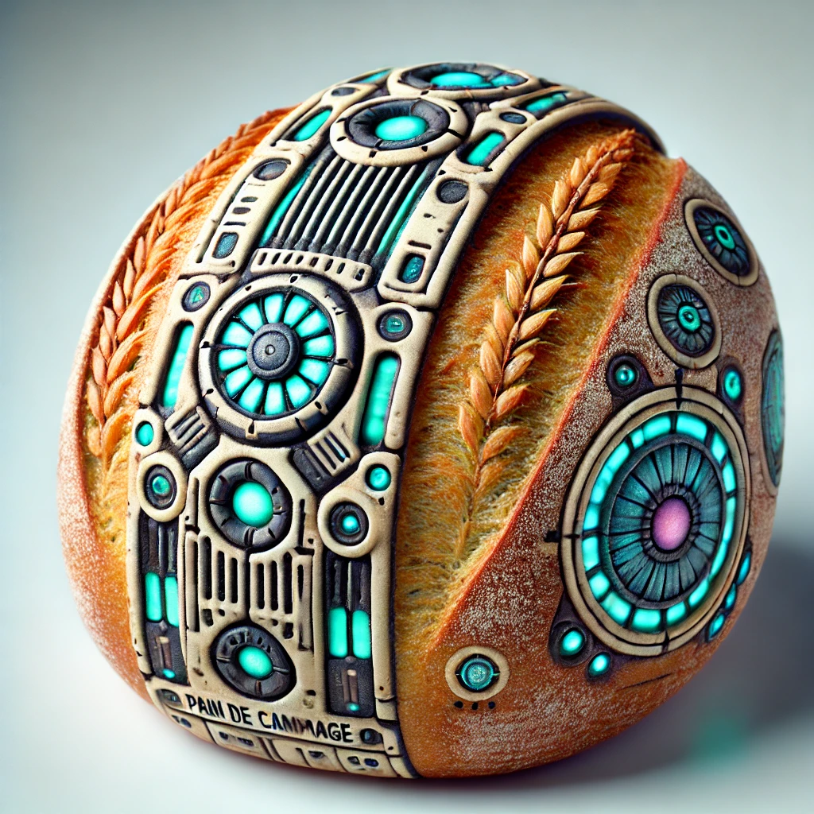 | 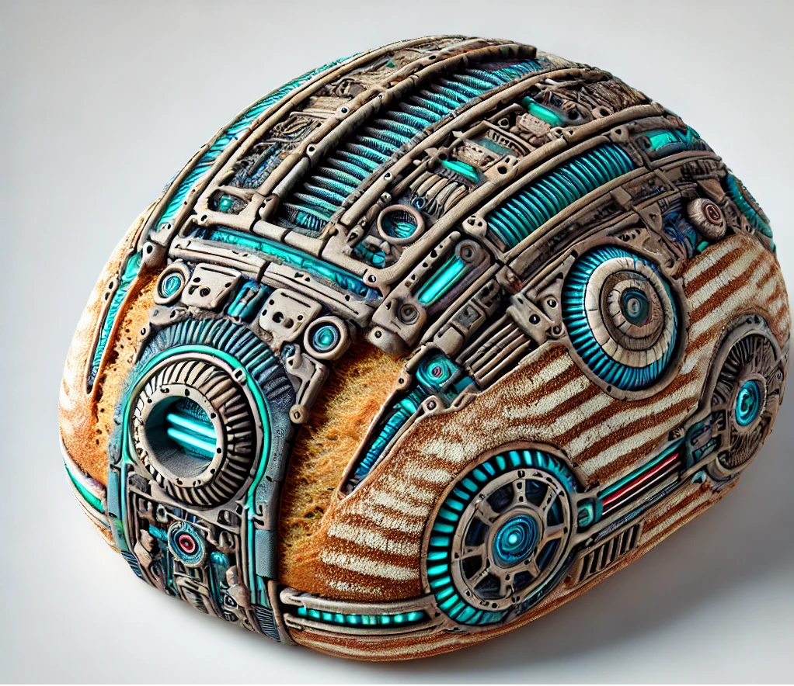 | 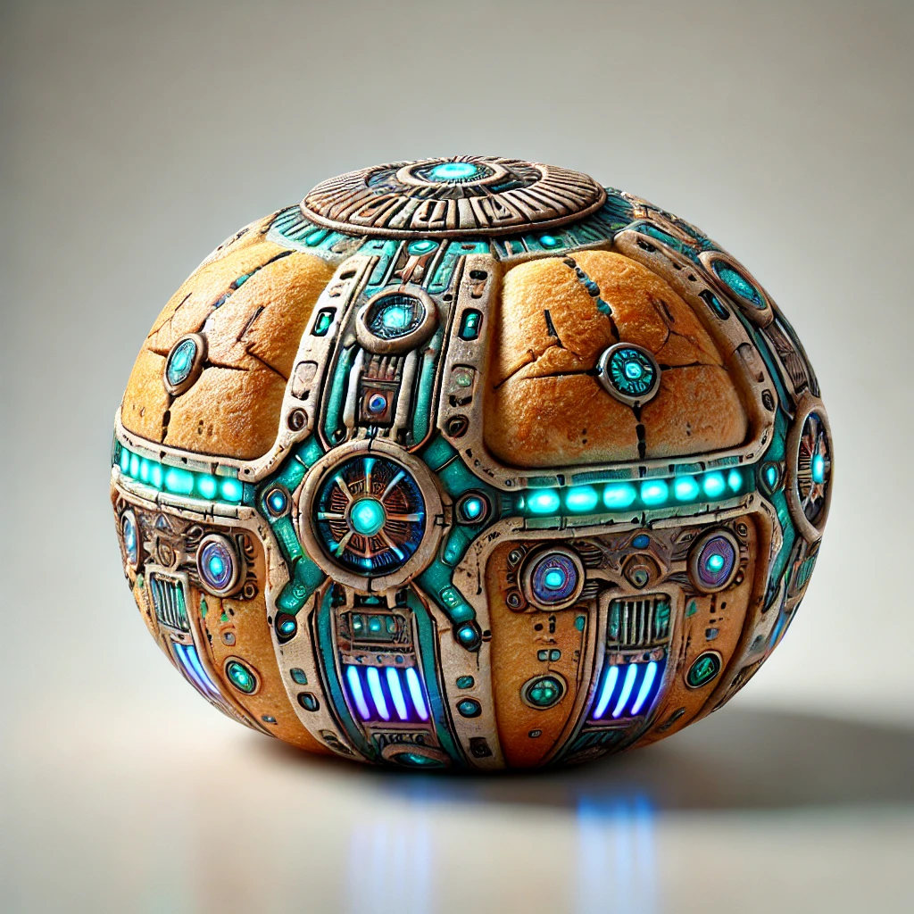 | 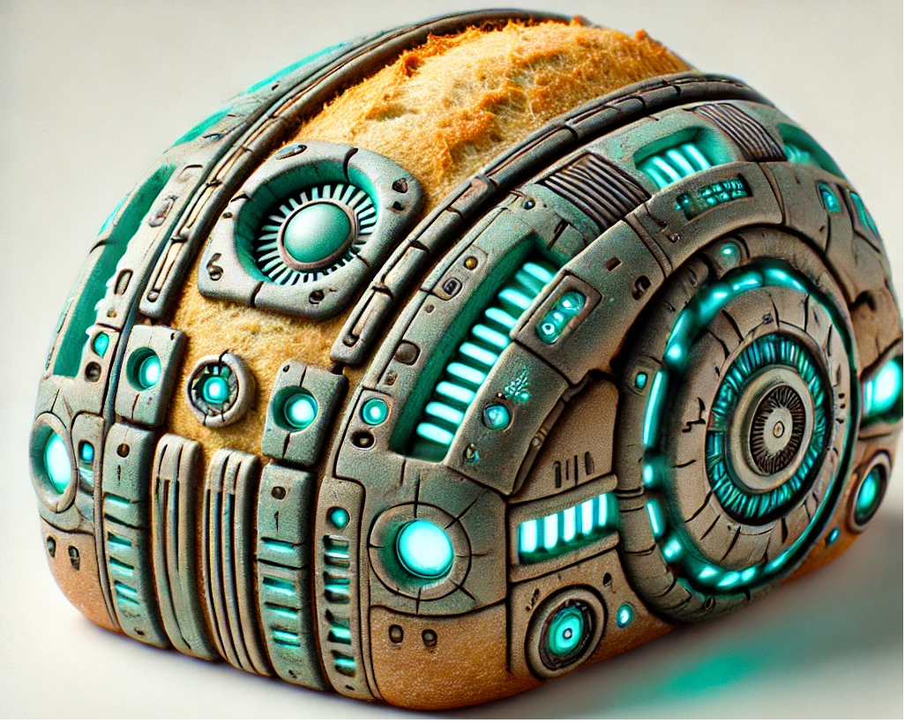 | |
|---|---|---|---|---|
|
"Mécano-Pain-Ancestral" Pain de Campagne Bio-Énergétique |
"Cyber-Levain-Core" Increased energy bread |
"SteamGear-Loaf" Cyber-mechanical craft bread |
"Neo-Core-Reactor" High energy nutritious bread |
"Nano-Crust-Core" Hyper-Structured bread with optimized fermentation |
| Future -like country bread, combining tradition and innovation. Its slow fermentation releases deep aromas, while its bio-boosted ingredients offer lasting energy. A favorite of survivors and hybrids! | A revolutionary bread with cybernetic design, designed to maximize energy and endurance. Its ultra-fermented internal structure boosts the assimilation of nutrients, ideal for new world explorers. | A revolutionary bread with cybernetic design, designed to maximize energy and endurance. Its ultra-fermented internal structure boosts the assimilation of nutrients, ideal for new world explorers. | Spherical bread with cyber-industrial architecture, designed to recharge body and mind. Its reinforced crust hides a soft interior, infused with energizing and regenerating ingredients. Perfect fuel for explorers of the future. | A bread designed for visionary minds and demanding stomachs. Its ultra-reinforced envelope preserves a light and airy crumb, boosted in essential nutrients. An essential for pioneers of taste and survival. |
| Ancient wheat flour, bio-farmers, activated chia seeds, spirulina infusion and acacia pollen, vegetable crust, Persian blue salt shards. | Farine de quinoa et blé ancien, levain bio-fermenté, protéines végétales, infusion de matcha et guarana, graines de lin et tournesol, éclats de sel noir volcanique. | Quinoa flour and old wheat, bio-fermented sourdough, vegetable proteins, matcha and guarana infusion, flax seeds and sunflowers, shards of volcanic black salt. | Quinoa flour and old wheat, bio-fermented sourdough, vegetable proteins, matcha and guarana infusion, flax seeds and sunflowers, shards of volcanic black salt. | Khorasan wheat flour and millet, sourdough enriched in probiotics, squash seeds and blown amaranth, infusion of ginger and lime, smoked salt, touch of raw honey. |
PASTRIES
| 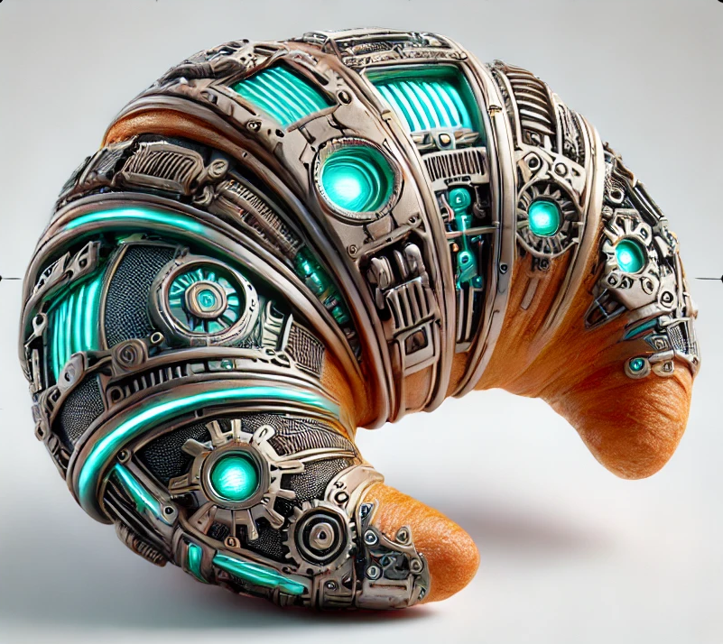 | 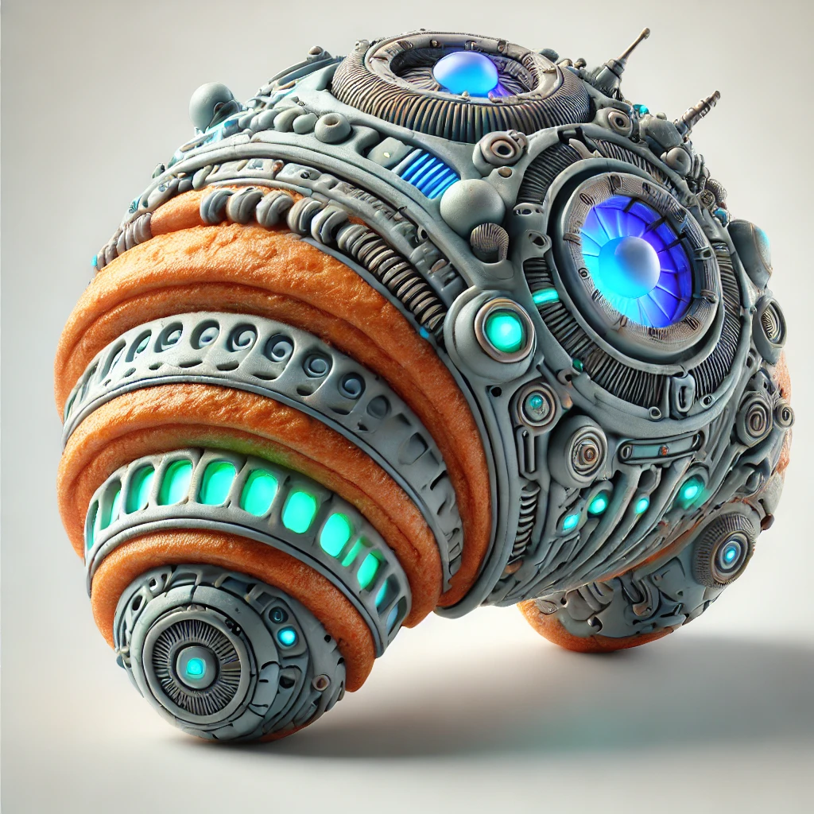 | 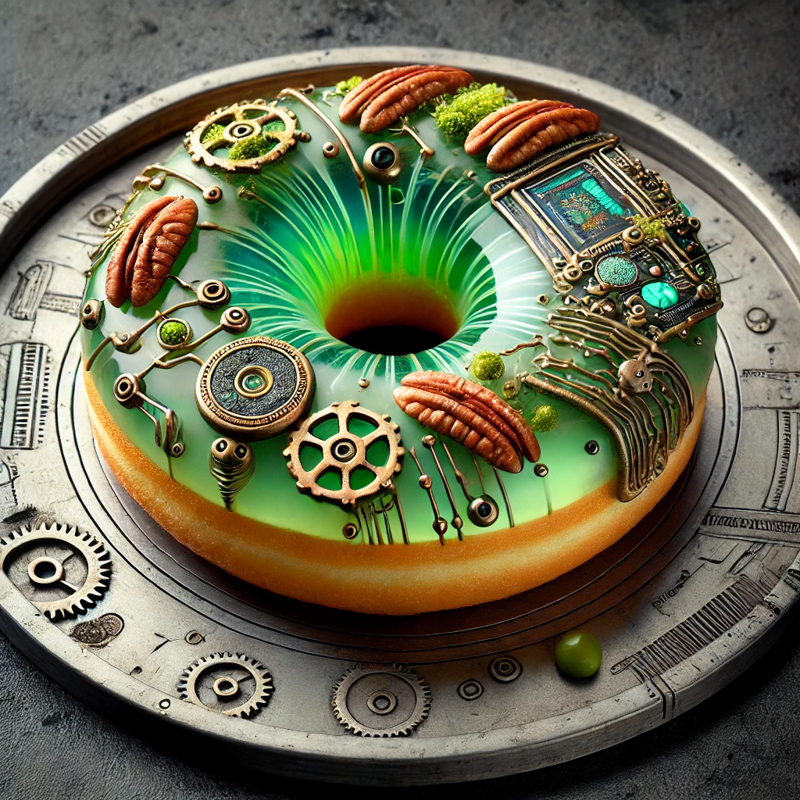 | 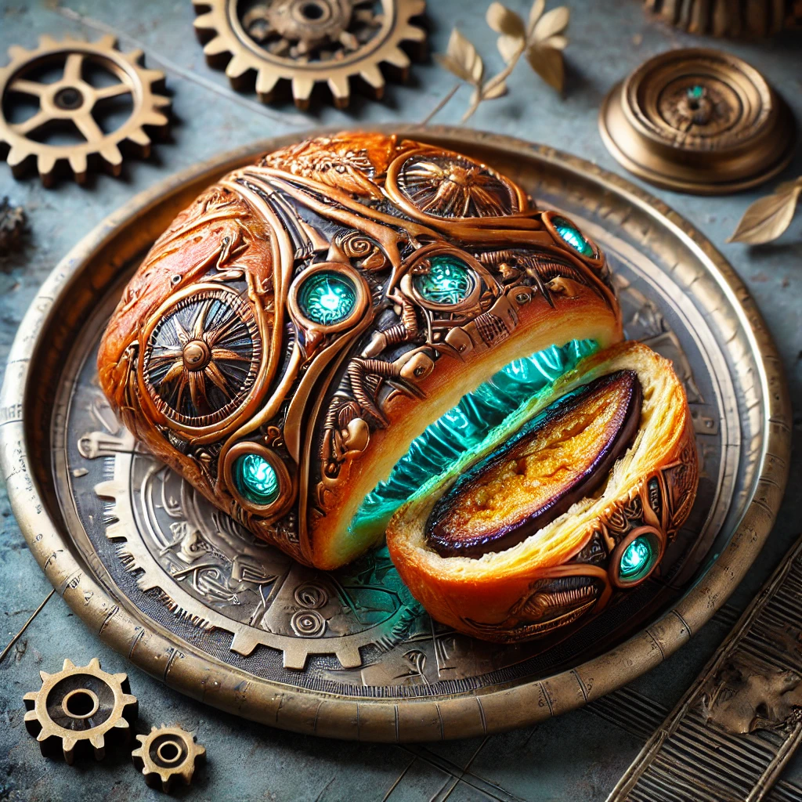 | |
|---|---|---|---|---|
|
"Chrono-Croissant MKII" Temporal Flaky Quantum Compression |
"Cyber-Levain Core" Pain Énergétique Augmenté |
"Orbital-Fruit Booster" Fractal Croissant with Galactic Essence |
"BioMech Donut" Plant-Based Donut Infused with Energy-Boosting Botanicals |
"Aubergine GearRoll" Mech-Vegetal Flaky Delight |
| A croissant designed to merge tradition and cutting-edge engineering. Its ultra-thin layers melt in the mouth, while its cyber structure ensures the perfect distribution of flavors. Ideal for brilliant minds in need of an energy boost. | Born from a culinary lab accident, this croissant merges multiple dimensions of flavor into a single bite. Its multi-layered flakiness bends time itself, delivering an explosion of textures between celestial lightness and quantum crispiness. Perfect for time travelers in need of a gourmet break | A stellar croissant infused with fruity aromas and a light, airy texture. Its bio-dynamic composition enhances the freshness of the fruits through optimized fermentation. Designed for deep-space explorers in need of a sweet burst of pure energy. | A revolutionary donut blending botanical science and biomechanical engineering. Its translucent glaze with cyber-organic patterns encases a fruity superfood core. Light, nourishing, and designed to enhance natural energy, it’s the perfect fuel for forward-thinking minds. | A reimagined pain au chocolat for the culinary explorers of the future. Its golden crust, intricately engraved with cyber-mechanical patterns, holds a heart of roasted eggplant. The buttery pastry meets a subtly spiced filling for a unique experience, blending tradition with post-apocalyptic innovation. |
| Ancient wheat flour, slow-aged organic butter, Tahitian vanilla infusion, mild sourdough, coconut sugar, raw cacao nibs, Himalayan pink salt | Barley and ancient wheat flour, triple-aged organic butter, crystalline date sugar, crushed tonka beans, yuzu and verbena infusion, transdimensional sea salt. | Ancient wheat and almond flour, citrus-fermented butter, mango and passion fruit purée, freeze-dried raspberry bits, goji berry and hibiscus infusion, touch of manuka honey. | Chickpea and whole rice flour, almond purée, spirulina and matcha infusion, coconut flower sugar, blackcurrant and açai jelly, caramelized pecan shards, hint of lime zest. | Ancient wheat flour, aged organic butter, roasted eggplant, maple syrup, smoked paprika and cumin infusion, Hawaiian black salt, touch of preserved lemon. |
CAKES
| 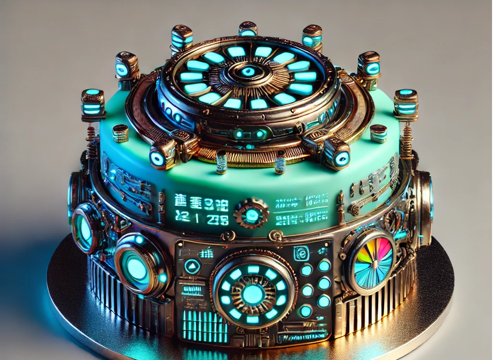 | 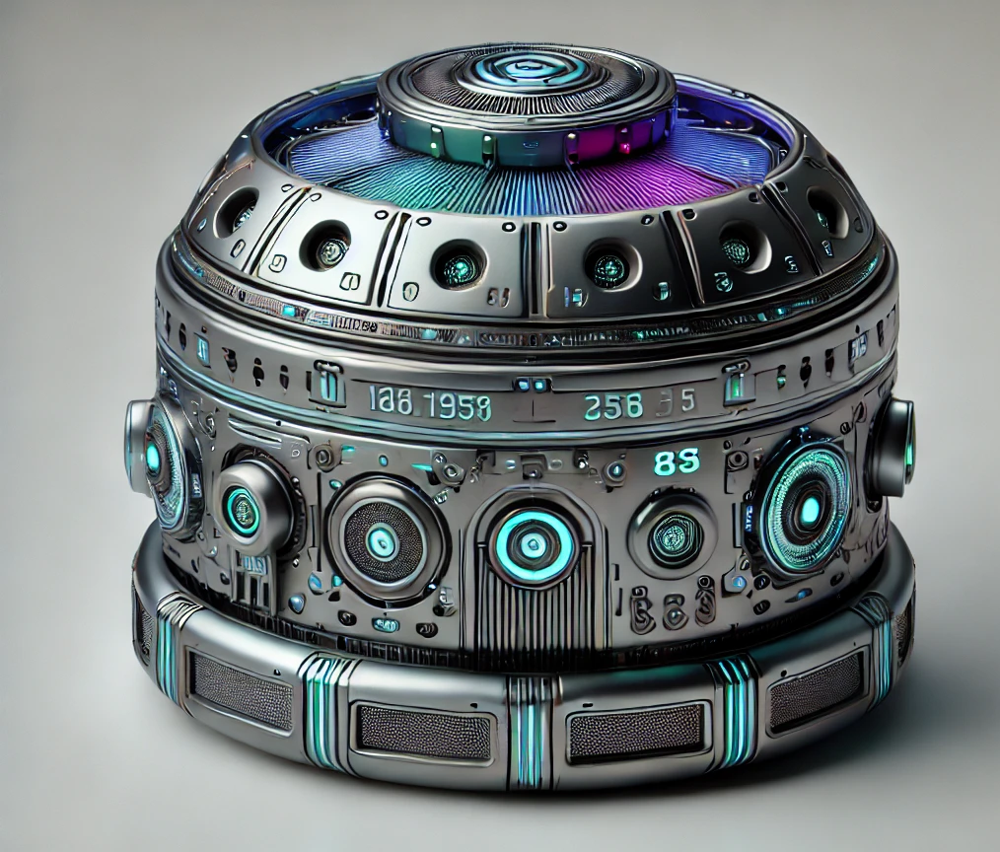 | 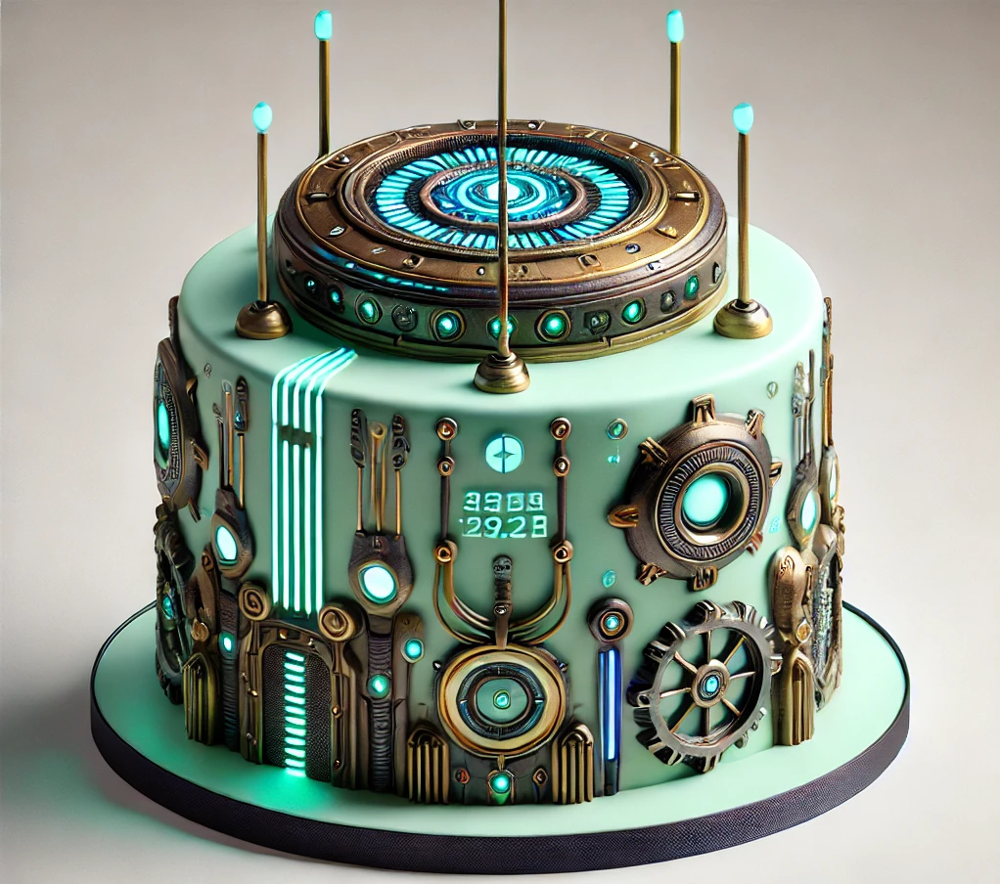 | 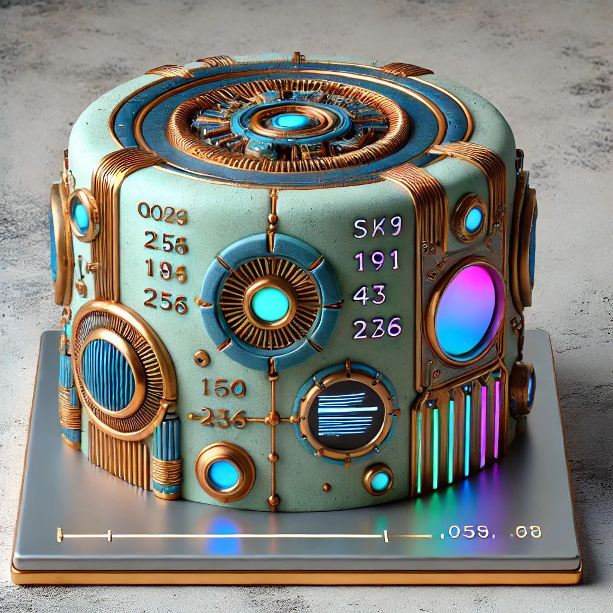 | |
|---|---|---|---|---|
|
"Neon Core Reactor" Bio-Mechanical Fusion Cake |
"Quantum Fruit Core" Multi-Fruit Cake with Energy Resonance |
"Neo-Tokyo Delight" Cyber-Zen Japanese-Inspired Cake |
"Afro-Tech Nexus" Futuristic Africa-Inspired Cake |
"Parisian Mecha-Tart" Avant-Garde Plant-Based Cake |
| A cybernetic cake designed to power brilliant minds and refined palates. Its luminescent glaze hides a complex architecture of textures and flavors, balancing absolute softness with futuristic crunch. Every bite releases a perfectly calibrated sweet explosion for optimal energy. | A pastry masterpiece merging advanced biology with ultimate indulgence. Its cybernetic architecture encases a mosaic of fruits bursting with vibrant flavors. Each layer releases a wave of freshness and energy, perfect for intergalactic explorers and enlightened gourmets. | A tribute to the fusion of Japanese tradition and high-tech futurism. Its sleek, mechanical design hides subtle and refined flavors, inspired by Japan’s finest desserts. Each bite transports you to a glowing Tokyo alley, balancing exquisite sweetness with technological precision. | A bold fusion of African heritage and cybernetic ingenuity. Its mineral-hued glaze reflects the continent’s vibrant landscapes, while its exotic flavors celebrate the richness of ancestral ingredients. A true explosion of textures and aromas, blending tribal tradition with high-tech innovation. | A tribute to great Parisian pastry, reimagined with a cyber-organic twist. Beneath its sleek mechanical design, this masterpiece reveals a delicate fusion of refined vegetables and silky textures. A bold dessert that defies convention, perfect for futuristic haute cuisine enthusiasts. |
| Raw cacao and almond flour sponge, matcha and yuzu-infused ganache, raspberry and açai molten core, bio-photonic glaze with lavender honey and blue spirulina, caramelized hazelnut shards, touch of volcanic salt. | Soft almond and coconut flour sponge, light ganache infused with goji berries and açai, layers of mango, passion fruit, and raspberry purées, blueberry and blackcurrant shards, translucent yuzu syrup and wild honey glaze, date sugar crystals. | Light matcha and black sesame sponge, azuki bean and almond milk mousse, creamy yuzu and ginger filling, miso-caramel and sweet sake mirror glaze, caramelized puffed rice pearls, touches of edible gold leaf. | Soft millet and raw cacao sponge, light Madagascar vanilla and cashew mousse, mango and tamarind compote, shea butter and acacia honey glaze, roasted cacao bean shards, hint of Berber spices. | Soft almond and sweet potato sponge, light pumpkin and chestnut honey mousse, creamy beet and raspberry filling, parsnip cream velvet glaze, caramelized hazelnut shards, touch of smoked salt. |
FESTIF CAKES
| 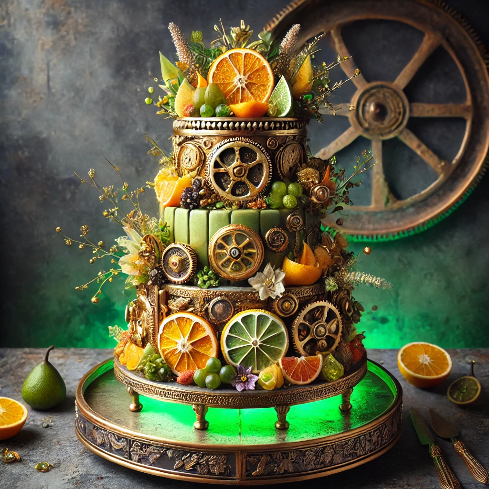 | ||||
|---|---|---|---|---|
|
"Chocolate-Strawberry Delight" Enchanted Celebration Cake |
"Garden of Delights" Lush & Fruity Tiered Cake |
"Magic Fruit Fest" Sugar-Free & Playful Kids’ Cake |
"Mechanical Eternity" Wedding Cake of Elegance & Precision |
"Mechanical Feline Delight" Baby Shower Celebration Cake |
| A towering masterpiece where the power of chocolate fuses with the intensity of strawberry, wrapped in a cybernetic structure glowing in striking green. Each tier unveils a perfect balance between melt-in-the-mouth softness and futuristic crunch, topped with a metallic glaze featuring intricate steampunk details. A sugar-powered reactor ready to launch taste buds into a new era! | A vibrant celebration of exotic fruits and plant-based ingredients in perfect harmony. This tiered masterpiece delights the senses with its natural textures and botanical-inspired design. A festive tribute to plant-based indulgence, irresistibly delicious and 100% vegetarian. | A fun and colorful cake that lights up little eyes and excites taste buds, without a single grain of added sugar! Its vibrant pop colors and whimsical mechanical design hide a naturally sweet delight, bursting with fresh fruits. A treat as fun as it is healthy, perfect for an energetic kids' party! | A masterpiece where timeless wedding elegance meets mechanical precision. Its pristine fondant is adorned with delicate pearl-like gears and sophisticated floral engravings, symbolizing an eternal love etched in time. Its refined structure and luminous finish make it the perfect blend of union and innovation. | A soft and enchanting baby shower cake, inspired by feline hues and adorned with delicate details. Its golden and cream layers are decorated with pacifiers, baby bottles, and subtle gears, blending warmth and elegance. Designed for a new mother, every ingredient is carefully selected to be wholesome and breastfeeding-friendly. A perfect sweet delight to welcome a new life in style! |
| Soft raw cacao and chestnut flour sponge, matcha-infused ganache, wild strawberry coulis, crunchy praline with cacao nibs, dark chocolate and spirulina mirror glaze, hints of candied lime and toasted pistachio. | Almond and chickpea flour sponge, light coconut and lime mousse, mango and passion fruit jelly, oat milk and acacia honey glaze, candied orange shards, hint of verbena and fresh basil. | Soft banana and oat flour sponge, light coconut and vanilla mousse, mango and berry purée, date purée and lime juice glaze, kiwi and blueberry shards, touch of shredded coconut. | Light Tahitian vanilla and almond sponge, delicate acacia honey and orange blossom cream, soft pear and tonka bean filling, satin white chocolate glaze with sugar pearl shards, hints of caramelized almond slivers. | Soft almond and oat milk sponge, light vanilla and orange blossom cream, pear and mango compote, cocoa butter and mild honey glaze, caramelized macadamia nut shards, hints of cinnamon and gentle ginger. |